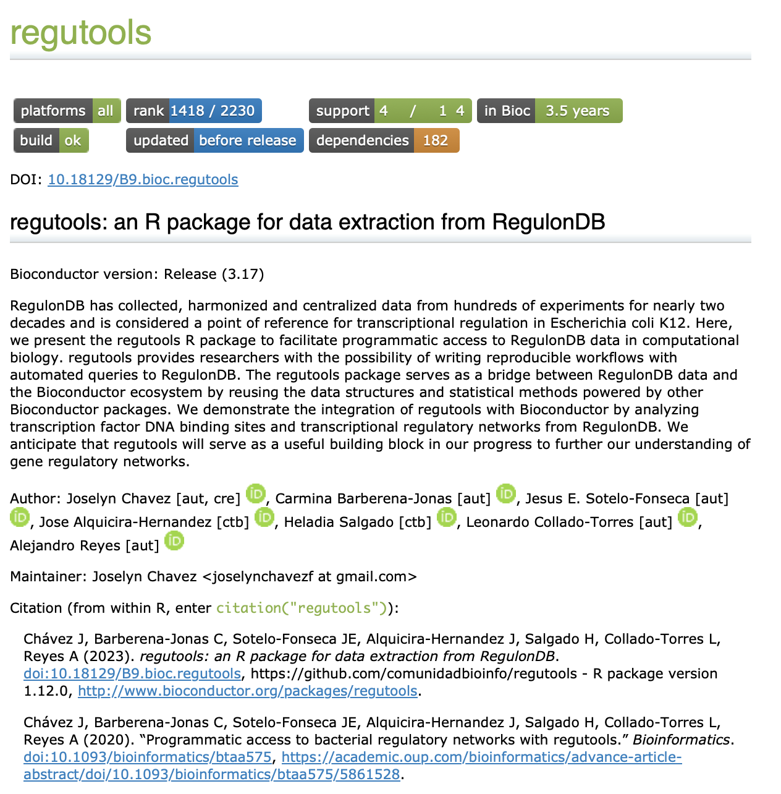

8 Creación de viñetas
José Antonio Ovando Ricárdez
30 de octubre de 2024
8.2 ¿Qué es una viñeta?
Es una guía extendida sobre cómo funciona el paquete. Es recomendable que muestre cómo utilizar las funciones del paquete, aplicado en un flujo de trabajo; por ejemplo: el análisis estadístico de una encuesta o el análisis de expresión diferencial de genes.
Podemos estructurarlo como haríamos con la escritura de un capítulo de libro o de un artículo científico: debe mostrar el problema a resolver y la metodología paso a paso sobre cómo el paquete lo resuelve.
Si el paquete contiene funciones que se complementan entre sí para alcanzar un fin específico, entonces debes mostrar su uso de forma compartamentalizada.
8.3 Características de una vignette
- Debe mostrar un flujo de análisis explotando el potencial de tu paquete.
- Implementa tantas funciones de tu paquete como sea posible, pero no es necesario que incluya todas.
- Los datos a usar deben ser pequeños o fáciles de acceder.
- Puedes crear múltiples viñetas para mostrar diferentes casos de análisis y cubrir una mayor cantidad de funciones.
8.5 ¿Cómo crear una viñeta?
Esta función tendrá tres efectos:
- Generar el directorio vignettes en caso que no exista.
- Agregar dependencias en el archivo DESCRIPTION (por ejemplo, knitr necesario para construir viñetas dentro del paquete).
- Abrir un templado en formato .Rmd para comenzar a escribir la viñeta, que se va a guardar en vignettes/mi_vignette.Rmd
8.6 ¿Cómo guardar y actualizar la viñeta?
Una vez que se ha generado el archivo vignettes/mi_vignette.Rmd se hacen las modificaciones necesarias. Puedes usar el comando:
Para guardar los cambios debes hacer click en el botón Knit o utiliza la combinación de teclas Ctrl/Cmd-Shift-K.
8.7 Veamos un ejemplo
Busca la viñeta del paquete regutools en la página de Bioconductor
https://bioconductor.org/packages/release/bioc/html/regutools.html
